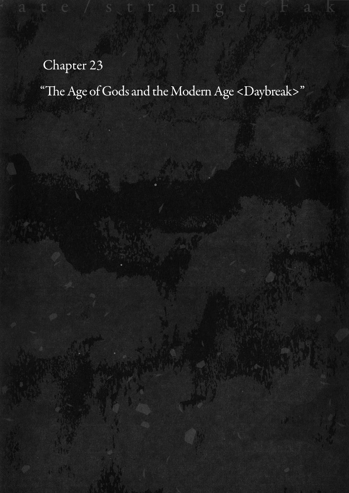
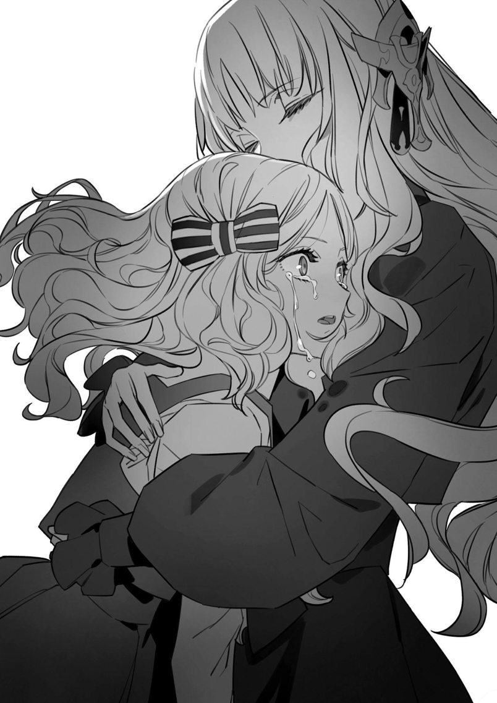
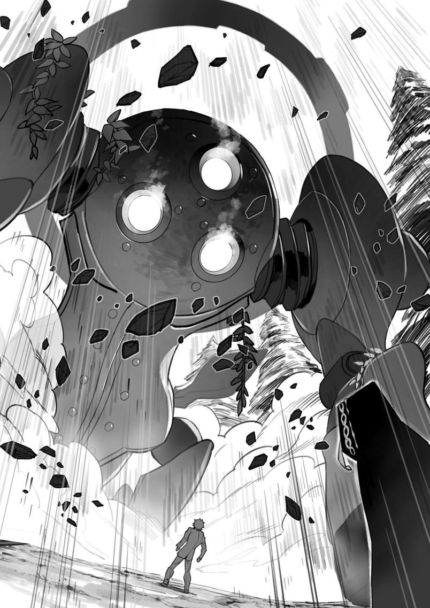

"A Era dos Deuses e a Era Moderna <Alvorada>"
Snowfield Oeste, centro da região florestal
Os ventos de Snowfield começaram a ficar mais fortes graças ao furacão gigantesco, sem precedentes, que se aproximava.
No entanto, o sol que nascia a leste iluminava a floresta, indiferente às tempestades que vinham em sua direção.
As nuvens se concentravam em torno do centro do furacão em um grau anormal. Nenhuma nuvem ousava desafiar os ventos intensos para ocupar os céus acima da floresta.
No centro daquela floresta banhada por luz morna e por brisas intensas, ecoou uma voz repleta de aura divina.
"Haruri. Estou nomeando você como a suma sacerdotisa deste lugar. Parabéns!"
"...?"
O que foi que ela acabou de dizer?
Haruri ficou imóvel sobre o chão de pedra lisa e polida, confusa demais para conseguir responder qualquer coisa.
Ela conseguia ouvir os ventos ao longe, mas nem o vento nem a luz do sol a alcançavam.
Estava cercada por paredes brancas como porcelana, adornadas de ouro. Além disso, o altar, as cadeiras e algumas outras peças de mobiliário haviam sido feitos com quantidades generosas de uma pedra azulada que ela supunha ser lápis-lazúli. À primeira vista, o cômodo lembrava o salão de exposição de um museu de arte.
Mas Haruri sabia com certeza que aquilo ficava no meio de uma floresta.
Dois dias antes, aquele lugar estava cheio de árvores de raízes profundas.
Depois de algumas ordens de Ishtar ao Servo Berserker de Haruri, aquele lugar foi inteiramente construído em meros um dia e meio.
Ela não entendia por que essa velocidade de construção era necessária, mas, antes que pudesse fazer as incontáveis perguntas que lhe enchiam a cabeça, Ishtar a chamou.
Seria preciso estar impressionantemente acostumada ao absurdo irrazoável para estar no lugar dela sem ficar confusa.
O coração de Ishtar corria uma maratona, e o coração de Haruri não conseguia acompanhar o ritmo do vestígio da deusa.
"Olha só, deixei você sem palavras! Bem, eu entendo alguém ficar radiante de felicidade por receber a honra de ser nomeada suma sacerdotisa, mas tome cuidado para não ficar arrogante como aquele idiota de quem Huwawa cuidou antes, certo?"
"E-espere! Eu não sirvo para um papel tão impo..."
"Você pode ser modesta uma vez. Se fizer isso uma segunda, vou entender que está duvidando do meu julgamento. Tome cuidado com isso", declarou Ishtar, em tom seco, com um sorriso inabalável.
A boca de Haruri congelou ao ouvir aquilo.
Porque ela entendeu que Ishtar não estava fazendo uma ameaça; estava apenas expondo um fato frio.
O que Ishtar realmente queria dizer com aquelas palavras era: "Você sabia que morreria se eu arrancasse sua cabeça e a usasse como bola?"
Ainda assim, a deusa sempre agia sem reservas e movida pela emoção.
Haruri aceitava que a arrogância e a austeridade de um deus fossem inseparáveis da sua capacidade de agir conforme a própria natureza.
Haruri tremia e não conseguia falar. Ao ver isso, Ishtar reagiu com um sorriso um tanto constrangido.
"Escuta, eu sei que pode parecer que não pensei direito, mas nomeei você suma sacerdotisa por um bom motivo, entendeu?"
"Deve ter sido um motivo realmente profundíssimo..."
"Foi sim! Uruk teve uma longa história de fé em mim antigamente, e uma das suma sacerdotisas dessa história se destacava acima de todas as outras. E, acredite ou não, o nome dela soava meio parecido com o seu. Até hoje não entendo por que ela se esforçou tanto para apoiar o governo idiota daquele dourado teimoso, mas, tirando isso, ela era uma garota boa e piedosa! Então eu soube que você era a escolhida porque seu nome combinava com o dela... Acertei, não?"
Ao ouvir o "Acertei, não?" no fim, Haruri também ouviu, sobreposto a ele, um ilusório "Não se atreva a me decepcionar, certo?"
Mas, na realidade, a ideia de Haruri não corresponder às expectativas de Ishtar sequer passara pela cabeça da deusa.
Ela simplesmente pensava: "Meus instintos jamais escolheriam a pessoa errada" e nada além disso.
E, por essa razão, no instante em que decepcionasse Ishtar, Haruri se tornaria inimiga dela.
Mas... ainda assim...
Várias lembranças vieram à mente da participante da Guerra do Santo Graal.
Ela quase perdera a vida ao enfrentar Bazdilot Cordelion e ao invocar Berserker. O que mais se destacava naquelas lembranças não era a cor do próprio sangue nem as chamas consumindo a fábrica de carne. Era a imagem brilhante de Ishtar permanecendo fiel às próprias convicções em qualquer circunstância.
Nesta altura, eu também preciso estar pronta para pôr tudo em jogo. Mesmo que isso me torne inimiga da humanidade, eu vou... Minha vida é um preço pequeno a pagar... para virar este mundo de cabeça para baixo.
Por mais perplexa que estivesse, Haruri ainda respondeu ao Espírito Divino que salvara sua vida com palavras que expressavam sua mistura complexa de gratidão e medo.
"Aceito humildemente esta honra... Foi graças a Ishtar que minha vida foi poupada. Você pode fazer comigo o que quiser."
"Hã? Sério?"
"O quê?"
"Qualquer coisa que eu quiser? Tem certeza disso?"
A resposta inesperada de Ishtar só aprofundou a confusão de Haruri.
Vendo isso, Ishtar abaixou ligeiramente o tom de voz.
"Eu já avisei você uma vez antes, lembra?"
"!"
"Eu disse que não me importo se você quiser se sacrificar, mas, pelo menos, divirta-se fazendo isso."
Dizendo isso, Ishtar segurou Haruri com gentileza pelos ombros.
"..."
Ela havia se esquecido daquele aviso.
Poderia morrer. Conseguia imaginar Ishtar partindo seu corpo ao meio exatamente dali.
Mas, apesar dos medos de Haruri...
A deusa da beleza puxou a garota amedrontada para mais perto e abraçou seu corpo trêmulo.
O peito de Ishtar envolveu o coração de Haruri com calor e suavidade.
Haruri ficou imersa em uma densa Energia Mágica revestida de aura divina, mas, diferente de todas as vezes anteriores, não sentiu a pressão contundente da Energia Mágica corroendo o núcleo do seu ser.
Ela sentiu uma tranquilidade parecida com os abraços que recebia da falecida mãe na infância, e, dentro dessa tranquilidade, a Energia Mágica de Ishtar penetrava por cada poro de seu corpo.
"O que...?"
Ela sentia alguma coisa atravessando seus Circuitos Mágicos e mudando a cor deles.
Ainda assim, aquilo não lhe era desagradável. Pelo contrário: Haruri teve a impressão de ter se tornado parte de algo maior, ou de que o mundo reconhecia sua presença pela primeira vez em toda a vida. Quando percebeu, estava coberta de lágrimas.
"Ah... Aaaah... Eu... eu..."
Haruri não acreditaria que sua cabeça pudesse conter tanta água se não soubesse o quanto estava chorando. Seu coração fervilhava, dizendo-lhe que acabara de conhecer a verdade do mundo, que enfim compreendia o significado da própria vida. E, diante dessa epifania, ela se entregou aos braços e à Energia Mágica de Ishtar.
Haruri parou de se mover, parou até de reagir, mas a voz de Ishtar permaneceu calma mesmo assim, como se aquilo não fosse nada demais.
"Ter dado aquele aviso foi o mesmo que dizer que você seria oferecida em sacrifício a mim. E eu não preciso da vida inútil de uma derrotista perdida, jogando fora o próprio valor."
"Is... Ishtar... minha deusa..."
"Você ainda tem medo de mim?"

Eu já devia ter superado isso...
Ela se lembrou de quando jogara a própria vida fora ao enfrentar Bazdilot no distrito industrial.
Mas a resolução de morrer que tivera naquela ocasião era ridicularizada pelo poder esmagador que agora a abraçava.
Eu sou tão... fraca...
"Tenho."
Haruri acreditava que aquilo que escapara de sua boca era a verdade, mas, naquele exato momento, o medo dentro dela já começava a ser substituído por outra emoção.
"Estou... apavorada. Eu já teria... fugido, se pudesse."
A respiração entrecortada de Haruri arruinava sua dicção. Ishtar sorriu para acalmá-la e então sussurrou em seu ouvido.
"É ótimo ouvir isso. É a prova de que você ainda teme perder alguma coisa. Prova de que ainda quer viver. É verdade que, quando eu matar você, farei isso sem hesitar. Mas eu abençoarei a vida que você viveu, não importa quem se coloque contra ela."
"Eu... não mereço..."
"Qual é a sua razão para estar aqui? Você não veio até aqui apenas para ter medo, veio?"
"Eu..."
Ela sentia o próprio cérebro derreter em um lago de Energia Divina corrosiva.
A aura divina começou a empurrar para a superfície as emoções que ela vinha mantendo fora do campo de visão. Naquele instante, ela foi inundada por lembranças.
Lembranças de magos matando seus pais.
Imagens de destruição injusta. Gritos. Tudo aquilo que a fazia feliz sendo despedaçado.
"Ah... Aaaaaaaaaaaaaaah..."
A torrente de memórias dentro do cérebro trouxe à tona o verdadeiro eu dela.
"Eu, eu só queria... vingança..."
"Sim, essa é a base sobre a qual você foi construída. Não é minha bênção. Isso é seu, e de mais ninguém."
"Eu não me importo com como o mundo supostamente deveria funcionar... Não me importa que as coisas sejam arcanas...! Eu só queria fazer eles provarem um pouco do que eu senti! Eles se esqueceram de que aquilo que se perde nunca volta, então eu ia lembrá-los! O arcano perdido deles nunca voltaria... assim como minha família também nunca vai voltar... Eu queria ensinar a eles o que isso significa..."
Haruri sentiu o "calor" sendo drenado rapidamente de suas emoções à medida que falava.
Percebeu o quão insignificante era a correnteza de poder das próprias emoções quando comparada ao poder de um deus de verdade.
Ela nunca tratara com leviandade a vida que pretendia oferecer em troca da própria vingança.
Mas, no instante em que entrou no fluxo de Energia Mágica de Ishtar, teve a sensação de que o mundo que conhecia era um aquário minúsculo e de que acabara de saltar desse tanque para o oceano. Era como se estivessem lhe mostrando o mar de estrelas.
"Eu realmente... ah... não consigo..."
Sua segunda demonstração de modéstia significava morte.
Sabendo disso, ela verbalizou o que sentia de verdade, sem tentar se rebaixar por educação.
Ah, é isso. A deusa diante de mim é péssima em julgar caráter. Ela brilha tanto que não tem como conseguir me enxergar direito.
"Você... é... radiância."
O sussurro de Haruri saía apertado, interrompido pela respiração.
"Uma humana... tão minúscula... tão minúscula como eu... não pode ficar ao seu lado!"
No fim, Haruri gritou todo o seu auto-ódio. Ishtar fingiu não ouvir o grito e sobrescreveu o coração dela com sua voz calma, porém poderosa.
"Você não é minúscula. Confie em mim."
Ishtar fechou os olhos por um instante, como se olhasse para o próprio passado, mantendo por trás das pálpebras todas as emoções ferventes que carregava.
"Vingança... Destruir para recuperar o orgulho ferido é uma providência natural. Todo ser dotado de vontade deveria fazê-lo."
Envolvida naquela imensa aura divina, Haruri não tinha como perceber que Ishtar estava dirigindo aquelas palavras a si mesma.
"Ishtar... minha deusa."
"Lute. Eu estarei observando você. Observando todos vocês, humanos. Não importa a que resultado cheguem. Estarei observando aonde o destino os levará. Seja a uma bela destruição. Ou a um contorcer feio e humilhante", declarou a deusa. Seus belos dedos enxugaram as lágrimas de Haruri antes de descerem até suas faces. "Vocês têm permissão para aproveitar a vida, celebrar as alegrias e amar o mundo. Lapidem com suas próprias mãos suas alegrias e suas tristezas... e, agarrando tudo aquilo que tem valor, ofereçam tudo isso como tributo a mim, ouviram?"
Com a voz de uma mãe reconfortante, Ishtar disse algo que nenhuma mãe jamais diria a um filho e soltou os ombros de Haruri em silêncio.
Mesmo então, as lágrimas de Haruri não paravam.
Ela imediatamente baixou a cabeça e se ajoelhou. O fluxo de lágrimas continuou mesmo assim.
Ishtar a observava de lado com a mesma neutralidade de sempre, como se o estado em que Haruri se encontrava não fosse nem ridículo nem inesperado.
"Use todo truque sujo que encontrar, se isso for necessário para continuar dançando neste mundo. Eu prometo que consigo encontrar algo de prazer até na dança mais desajeitada, desde que você nunca abandone sua humanidade."
Como uma mãe amorosa.
"Eu não posso ensinar você a dançar... mas posso lhe dar um belo vestido e bons sapatos."
Ou como uma colhedora observando o trigo dourado crescer.
"Na forma de uma bênção que lhe permita pisotear qualquer um que ouse tentar impedi-la."
Nada de especial aconteceu.
Ela não salvou a vida de Haruri novamente, nem lutou ao lado dela como fizera na fábrica no dia anterior. Ainda assim, as palavras abençoadas ou amaldiçoadas de Ishtar provocaram uma enorme mudança no coração de Haruri.
Tudo o que a deusa fizera fora lançar palavras impregnadas de Energia Mágica.
E isso bastou para transformar irremediavelmente, em questão de minutos, a visão que uma maga tinha da própria vida.
Esse fato era a maior prova possível de que a construção do templo a estava fazendo recuperar seu estatuto divino.
Embora outra causa possível fosse a Energia Mágica do Espírito Heroico Gilgamesh sendo despejada no Graal Menor Filia.
Menos de uma hora depois.
"Peço sinceras desculpas por ter perdido a compostura."
Depois de finalmente recuperar a calma, Haruri apresentou uma declaração formal a Ishtar.
"Tudo bem, eu já ia abençoar você assim que o templo ficasse pronto de qualquer maneira. Agora só precisa fazer o seu trabalho de suma sacerdotisa."
"Claro. Mas o que exatamente faz uma suma sacerdotisa?"
"Deixa eu ver... Antigamente, elas cuidavam das oferendas... Mas a parte principal é tomar conta do templo enquanto eu estiver fora. E, eventualmente, ainda vamos ter que erguer um zigurate... A arquitetura moderna até que é legal, apesar dessa obsessão por altura. Com a quantidade de bênçãos que eu posso pagar, dá para financiar um arranha-céu adorável com mais de dois quilômetros de altura! Fique ansiosa por isso!"
Ishtar falava como uma adolescente inocente até que, de repente, seu tom de voz caiu.
"Ah, mas antes disso..."
"?"
Ishtar voltou os olhos para a entrada do templo.
Haruri tentou descobrir o que ela estava olhando, mas não conseguiu ver ninguém.
Ishtar fez um anúncio à sacerdotisa que agora compartilhava sua aura divina, mas sua atenção estava além da entrada, muito fundo na floresta.
"Eu sei que foi tudo meio repentino, mas o nosso templo vai receber seu primeiro visitante em peregrinação... Vá recebê-lo primeiro, está bem?"
Lado de fora do templo
"Mas que... porra é essa?"
Jester Karture estava atônito.
Ele estava em pé na floresta, na forma de um belo rapaz. A mesma aparência que exibira na delegacia.
Se a memória não o traía, aquilo era apenas uma floresta quando ele inspecionara a área antes da Guerra do Santo Graal.
Mas a paisagem agora era completamente diferente.
Um edifício gigantesco, semelhante a uma pequena montanha, surgira em plena floresta plana.
Diante dele havia um grande portão colorido com o mais azul dos lápis-lazúli e, depois do portão, uma escadaria de pedra levava ao nível do templo.
No topo da escadaria havia um edifício desenhado para lembrar as ruínas da antiga Mesopotâmia, e os dois lados do último degrau estavam adornados com estátuas de ouro e prata modeladas a partir de bonecos Kokopelli, símbolos americanos que atraem refinamento e dinheiro.
Até aí, tudo bem. O verdadeiro problema era a escultura colocada mais para fora do prédio.
O objeto de formato inquietante, aparentemente pensado para ser uma estátua guardiã, lembrava um monstro saído de algum conto de fadas do leste asiático.
"Ainda estou dentro da ilusão deles...?"
Escondido à sombra das árvores grandes, Jester inspecionou o templo.
Por mais piada que a paisagem à sua frente parecesse, ele sentia com clareza que tudo aquilo era indiscutivelmente real.
Isso porque ele sabia que as ilusões dos Prelati não seriam capazes de produzir com tanta facilidade a aura divina inesgotável que preenchia aquele templo.
"O que um templo desses está fazendo aqui? Não combina com o entorno... nem esteticamente, nem em magnitude de poder."
Jester havia louvado abertamente o que viu quando Archer e Lancer se enfrentaram no deserto no primeiro dia da Guerra do Santo Graal, mas, desta vez, sua impressão era a de que não queria ver sua bela Assassin envolvida naquela palhaçada.
Observando apenas os ornamentos e os objetos de arte isoladamente, alguém até poderia imaginar um museu no meio de um evento de temática oriental, mas a aura divina absolutamente real que envolvia o templo fazia tudo parecer uma piada repulsiva aos olhos do hematófago.
Eu já senti essa aura divina antes... diante do hospital, antes de Kuruoka engolir todo mundo. Os Prelati não estavam mentindo. Realmente existe um Espírito Divino, ou algo muito próximo disso, fora da cidade. Sim, não pode ser um Espírito Heroico. É impossível invocar algo tão profundamente arcano dentro da moldura desta Guerra do Santo Graal. Então ela é de fato uma intrusa nisso tudo... como eu.
Jester pensava isso no sentido de ambos não serem humanos. Tinha plena consciência de que a presença divina que ocupava o templo à sua frente rejeitava a Ordem Humana de forma muito mais nociva do que ele jamais rejeitaria.
Só um Ancestral seria capaz de competir em pé de igualdade com isso!
No auge de sua condição, ele talvez conseguisse causar algum estrago.
Mas, agora, tinha várias partes da própria fundação corporal destruídas, além de ter sido abandonado pelo Ancestral que lhe servira de origem como vampiro.
O caçador virara presa. O manipulador virara marionete.
Jester não conseguiu conter um sorriso dolorido.
Huhu, eu busquei o Graal porque já não aguentava mais o tédio, mas nunca me imaginei sentindo medo aqui. Se essa deusa fajuta também faz parte do ritual, então admito que cometi um erro. Foi muito arrogante da minha parte presumir que a Guerra do Santo Graal fosse um mero ritual humano.
Um raro momento em que Jester abrigou um pensamento admirável no coração.
Com cautela acima de qualquer cautela, Jester se escondeu o máximo que pôde e esperou por uma chance de contaminar o templo. Até que...
Raving Shadow Flash "Zabaniya".
Ele ouviu um som.
Uma voz bela.
Uma voz amada.
Uma voz perfumada, que despertou instantaneamente a mente de Jester do fundo do poço.
"UOOOOOOOOOOOOOOOOOH!"
Com um grito de guerra extasiado, ele saltou e torceu o corpo no ar.
Incontáveis fios de cabelo transformados em lâminas negras atravessaram o espaço entre seus membros.
As lâminas de cabelo recém-lavado ondulavam em suas posições tentando capturar e picar o corpo de Jester, mas Jester dançou no ar, desviando de tudo com movimentos que desafiavam as leis da física.
"Maravilhoso! Deslumbrante! Excelente! O mundo que você reescreve é sempre mais saudável e, ainda assim, mais provocante! Seus movimentos são os mais belos e refinados! Fofíssimos, é essa a palavra! Verdadeiramente, verdadeiramente fofíssimos!"
Jester dançou até os portões de lápis-lazúli do templo, com a palavra "furtividade" completamente apagada de sua memória, e gritou não por si mesmo nem por Assassin, mas para que o mundo inteiro ouvisse.
"É você! Só você! Você é a única! Foi você quem me ensinou as alegrias da vida! Você me deu tudo o que eu tenho! Foi você quem me puxou para fora das areias do desespero! Ninguém além de você!"
"..."
Como prova de que as palavras dele não tinham valor algum, a dona daquele cabelo, a Assassin sem nome, continuou o bombardeio de lâminas capilares.
"Sua bela fanática! Embora eu não imaginasse que você me seguiria até um lugar tão perigoso... um lugar tomado pelo poder de uma deusa pagã!", proclamou Jester em voz ainda mais alta enquanto desviava de todos os ataques por um fio.
Depois de berrar sua alegria, Jester saltou para o topo de uma grande árvore.
No instante em que sua mão tocou o tronco, a árvore se transformou. Torceu-se, partiu-se e rangeu até virar um tentáculo de madeira gigantesco, cheio de galhos e folhas, que atacou Assassin.
"...!"
Assassin se perguntou de onde o vampiro supostamente debilitado ainda estava tirando tanta força.
Mas a resposta de Jester teria sido "é o poder do amor", então ela não obteria esclarecimento algum mesmo que perguntasse.
Os movimentos de Jester de fato iam além do que as leis do mundo permitiam. Era visível que ele perdia fragmentos de si mesmo toda vez que forçava sua habilidade a se manifestar.
A Assassin sem nome manteve seu Fantasma Nobre ativo, fazendo as incontáveis lâminas de cabelo colidirem contra o tentáculo arbóreo.
Enquanto isso, Jester estendeu a mão para outra árvore, criando um novo tentáculo. O ciclo prosseguiu até que...
"Silêncio!"
Uma voz galante ecoou quando ninguém esperava, parando Jester e Assassin.
Na direção da voz, os dois viram uma garota no topo da escadaria do templo, em pé diante da entrada interna.
Por parecer jovem demais para ser considerada adulta e por seu traje ocidental destoar da decoração do templo, ela parecia apenas uma turista comum em visita a ruínas antigas.
Mas sua voz carregava uma parcela de aura divina, o bastante para alcançar os ouvidos de todos ao redor, apesar dos ventos altos soprando pela área.
"Esta floresta é o jardim da grande deusa Ishtar. Não será permitido mais tumulto!"
Igreja Central de Snowfield
"Os sinais desta terra estão claramente diferentes", murmurou o Executor Hansa Cervantes, da Santa Igreja, enquanto assistia à TV no cômodo dos fundos da capela.
Ele já havia percebido no dia anterior que o lado oeste do terreno estava alterado e que essa mudança vinha se espalhando, mas interpretara aquilo apenas como uma troca de circuitos, e agora chegara o momento em que o interruptor fora acionado.
O ponto de virada a que ele se referia era o momento em que Ishtar nomeara Haruri como suma sacerdotisa, mas, de dentro da igreja, Hansa não tinha como saber disso.
Hansa normalmente usava apenas as Sisters, mas, desta vez, estava recorrendo a todos os contatos da Igreja dentro da cidade para reunir informações.
Ele estava pronto para ir atrás de Jester Karture no instante em que voltasse do mundo dos sonhos, mas, imediatamente depois disso, ouviu relatos de testemunhas afirmando que Flat Escardos fora baleado e que seu cadáver se levantara e matara todos os franco-atiradores.
"Flat Escardos... Não era um cara ruim, para um mago... Considerando que chamou a atenção de um Ancestral, aquilo dentro dele pode ser praticamente qualquer coisa."
Eles só se conheciam havia um dia, mas Hansa gostara bastante daquele jovem mago esquisitão. Pensando nisso, ele fez o sinal da cruz em silêncio.
Se ele reviveu como um Apóstolo Morto, então devo ser eu a purificar sua alma. É o mínimo que posso fazer.
"Mesmo assim... do jeito que as coisas estão, eu não consigo garantir de forma convincente a segurança dos derrotados da Guerra do Santo Graal quando vierem para cá."
Grandes partes do teto da capela haviam desabado na batalha entre Saber e Archer, e a única providência tomada para consertá-lo fora colar uma fita de NÃO ENTRE.
Depois de alguns favores puxados aqui e ali, o padre que normalmente respondia por aquela igreja fora chamado para Las Vegas, onde o mestre de Hansa estava. Hansa sabia que, quando ele voltasse, cairia de joelhos ao ver o estado daquilo.
"Isso, claro, se ainda existir cidade para ele voltar."
Hansa Cervantes recebera uma mensagem da Santa Igreja dizendo que a cidade corria risco de ser apagada.
Considerando que uma das funções da Santa Igreja é lidar com cidades destruídas por Apóstolos Mortos, a possibilidade de os mentores da Guerra do Santo Graal apagarem uma cidade com oitocentas mil pessoas dentro soava perfeitamente normal para eles.
"Alguém no alto escalão do lado público da sociedade pensa do jeito da Santa Igreja", seria a conclusão deles.
A falta de informações mais claras significava que o processo que executariam jamais se tornaria de conhecimento público.
A tela da TV diante dele mostrava, em repetição, imagens de satélite da água do rio ao lado da Casa Branca explodindo para o alto em espiral e da calota do Polo Norte faltando um pedaço perfeitamente esférico. Fazia sentido que os responsáveis quisessem apagar a cidade.
"Embora, pelo jeito, esse furacão vá arrancar a cidade do chão antes que eles consigam."
Até mesmo Hansa, que era relativamente pouco instruído perto de um mago, conseguia sentir a presença poderosa se aproximando pelo oeste.
A maioria dos magos da cidade estava em pânico porque não entendia o que era aquele furacão, mas conseguia perceber que se tratava de uma tempestade mágica contendo quantidades extraordinárias de mana.
A magia pode produzir nuvens de trovão e ciclones, mas algo capaz de manipular livremente uma tempestade daquele tamanho está mais perto de uma Magia do que da magia comum.
De acordo com os dados sobre Guerras do Santo Graal do departamento de inteligência da Assembleia dos Oito Sacramentos, as Guerras do Graal de Fuyuki também provocaram um desastre muito além do que poderia surgir de um duelo entre Espíritos Heroicos.
Dizia-se que houve uma comoção gigantesca em todos os níveis da hierarquia da Santa Igreja quando uma besta demoníaca enorme surgiu no rio e caças começaram a cair do céu feito moscas. Somando isso ao hotel desabado e ao grande incêndio que veio logo após o fim do ritual, um tufão destruindo tudo ainda parecia preferível por ser muito mais fácil de justificar.
Hansa recebera uma diretriz ordenando que ficasse longe da cidade e depois entrasse sorrateiramente nela quando tudo acabasse para fazer a limpeza.
Ele fez questão de não ler aquilo.
Eu queria conseguir tomar decisões sem emoção como meu mestre. Infelizmente, a influência do sr. Dilo não é tão fácil de sacudir.
Hansa tinha três pessoas que considerava seus pais. A mãe que o criou nas montanhas; o bispo Dilo, que o tirou de lá; e Delmio, que o treinou como Executor.
Hansa fora arrancado de um ambiente bastante singular nas montanhas e ensinado nas virtudes do homem comum. Mesmo depois de todo o treinamento de Executor, essas virtudes continuavam nele, ainda que torcidas de maneira esquisita.
Era por isso que continuava na cidade, e naquela igreja.
Como as Sisters estavam com ele, já deixara tudo arrumado para partir se a situação exigisse, mas permaneceu ali, acreditando que precisaria ficar presente até o último segundo para ouvir as vozes daqueles que pedissem proteção.
Também é possível que suas interações leves com Flat Escardos, e a perda subsequente do garoto, tivessem exercido algum efeito sobre ele.
Hansa tentava pensar em uma forma de lidar com a floresta do oeste, bebendo café misturado com pó de jolokia para expulsar a parte mais macia do próprio coração. Mas esses pensamentos foram interrompidos por:
"Hansa, temos uma visita. Ela está esperando lá fora."
Uma das Sisters de seu Quartet voltou e lhe deu o recado.
"Uma Mestre!?"
Só consigo pensar na Mestra de Saber. Apesar da quantidade anormal de Energia Mágica, ela não parecia ser uma maga.
Dada a situação, ela podia pedir proteção mesmo que Saber ainda não estivesse deixando a disputa.
Mas, contrariando as especulações de Hansa, a Sister deu uma resposta que ele jamais teria imaginado.
"Sim. Ela diz ser a Mestra de Rider."
"Como é?"
Rider... o Espírito Heroico montado? Não pode ser Kuruoka Tsubaki. Então sobra... aquele outro Espírito Heroico... o que não é Pale Rider?
Hansa era o supervisor, mas não era um Mestre, então nem sequer tinha certeza de que Pale Rider fosse um Rider.
Vendo Hansa cheio de perguntas, a Sister continuou em tom impassível.
As palavras seguintes a deixaram se perguntando por que demorara tanto a dizer tudo aquilo.
"Ela diz que quer anunciar sua participação na Guerra do Santo Graal ao supervisor."
Snowfield Oeste, diante do templo de Ishtar
"Estas terras foram abençoadas pela deusa radiante sob o nome de Templo Neo-Ishtar. Sua Santidade acolhe de braços abertos pessoas de outros credos e até de outras espécies, então, se vieram em peregrinação, façam silêncio e entrem na fila."
A mulher falava como uma guia turística de ruínas ou de museu de arte, provocando indecisão tanto em Jester quanto em Assassin.
Embora essa indecisão tenha durado apenas um instante.
Jester saltou no mesmo instante em que concluiu que a presença da mulher era fraca demais para que ela pudesse ser o Espírito Divino de que os Prelati haviam falado.
Ninguém sabe se o plano dele era beber o sangue dela para se recuperar, mantê-la como refém contra Assassin ou qualquer outra coisa.
Porque, fosse qual fosse o objetivo, era evidente que estava muito além do alcance dele.
Incontáveis projéteis azuis surgiram por trás da mulher e atravessaram o corpo de Jester.
"Gh...!?"
Jester presumira que, mesmo debilitado, ainda conseguiria ignorar qualquer magia improvisada, então foi pego desprevenido pelo dano que aquilo causou ao seu corpo, muito acima do que imaginara. Uma segunda onda de projéteis azuis veio em seguida, e ele agarrou um deles no ar.
Logo depois, uma dor intensa percorreu sua mão direita e um dedo derretido caiu no chão.
"...!"
O ataque não só era capaz de infligir dor localizada a um Apóstolo Morto, como também podia danificar o corpo dele.
Não, não é isso.
Ele analisou a mutação em seu corpo e compreendeu de imediato que não se tratava de mera destruição.
Que hipnotoxina monstruosamente poderosa! A dor é, na verdade, minha alma rejeitando o veneno!
O dedo derretido era, ao que tudo indicava, um reflexo de rejeição a uma tentativa direta de adormecer sua alma.
Jester rangeu os dentes enquanto olhava para aquilo que tentara corroê-lo.
O projétil era, na verdade, uma abelha.
Mas não uma abelha comum.
Todas e cada uma daquelas abelhas tinham o exoesqueleto tingido de azul, de modo que pareciam quase estátuas intrincadas de abelhas feitas de lápis-lazúli.
Golems?! Não, isso não é isso! Não me diga... são abelhas de verdade!?
Abelhas cor de lápis-lazúli não existem.
Há espécies de abelhas naturalmente azuis, como algumas variantes mais bonitas das abelhas-cuco.
Mas aquela não era desse tipo.
Abelhas daquele tamanho normalmente exibem uma combinação vívida de amarelo e preto. Parecia como se fossem esse tipo de abelha depois de evoluir a ponto de aprender a vestir uma armadura de lápis-lazúli.
Eu já vi antes essa Energia Mágica com propriedades de controle sobre abelhas...
"Mulher! Você por acaso é a sucessora de Odd Borzak?!", gritou Jester enquanto recuava um grande passo depois de afastar a abelha com um tapa.
"!"
O rosto da mulher perdeu a compostura por um segundo.
"Você conhece meu avô?"
"Claro que conheço! Ele ganhou bastante fama, tanto entre os magos quanto entre os da nossa espécie. Embora eu tenha ouvido dizer que essa fama acabou sendo a ruína dele, já que os humanos puseram uma recompensa por sua cabeça."
"Um Apóstolo Morto..."
"Não fique tão tensa. Eu não era inimigo dele."
Vários pensamentos cruzaram a mente de Jester ao mesmo tempo enquanto conversava com a mulher diante dele. E, no meio de tudo isso, ele ainda não tirava a atenção da ameaça representada por Assassin.
A sucessora de Odd.
Mas ela não é da nossa espécie.
Selos de Comando na mão esquerda.
Ela é uma Mestra?
Onde está o Servo?
Ela herdou as abelhas de Apóstolo Morto?
Se herdou, será que consegue usá-las?
Aposto que não.
Espera.
Não importa se ela as herdou ou não. Com meu poder, posso transformar as abelhas que ela tem agora em abelhas de Apóstolo Morto!
O único mago Borzak que Jester conhecia era um companheiro Apóstolo Morto. Um homem que controlava abelhas venenosas com o poder de transformar humanos em Apóstolos Mortos.
Se ele usar o veneno dessas abelhas para aumentar o número de seus carniçais em Snowfield, pode tanto recuperar suas forças quanto semear hesitação no coração de Assassin.
Eu vinha evitando espalhar a minha espécie com tantos enxames de magos andando por toda parte, mas, se eu usar essas abelhas, consigo evitar o problem—
A cabeça dele foi arremessada para trás.
Uma lâmina de cabelo negro atravessou o lugar onde sua cabeça estivera um instante antes.
"HAHA! Está com ciúmes, minha bela Assassin? Não precisa se preocupar, não estou dando em cima dessa mulher! Só estou tentando levantar fundos para poder amar você ainda mais!"
"..."
Assassin continuou atacando sem dizer uma palavra, mas as palavras de Jester só fizeram a garota das abelhas ficar ainda mais cautelosa em relação aos dois.
"Assassin...?! O que um Servo está fazendo com um Apóstolo Morto?!"
"...!"
Aquelas palavras fizeram Assassin perceber que a mulher criadora de abelhas no alto da escadaria também fazia parte da Guerra do Santo Graal.
Ela obviamente jamais duvidara do envolvimento de qualquer um dentro daquele templo, mas essa confirmação também intensificou sua cautela em relação à maga.
Mas isso é um problema para depois. A criatura infernal vem antes de tudo.
Assassin se voltou para Jester, com suas prioridades inalteradas.
No entanto...
"Ser um Servo não faz de você uma exceção."
Desde que a Energia Mágica de Ishtar invadira Haruri, a mente da garota estava passando por um processo de mudança para torná-la um condutor melhor de ritos.
Ela sempre pensara no Santo Graal apenas como uma ferramenta para destruir o mundo da magia, então agora proteger o templo de Ishtar se tornava uma prioridade acima do Graal. Isso significava que trabalhar para Ishtar gradualmente se convertia em seu principal objetivo.
"Meu nome é Haruri. Sou a suma sacerdotisa a quem Sua Santidade, a deusa Ishtar, concedeu vida e função. Como tal, não posso tolerar mais violência dentro destas terras."
Isso porque pintar o mundo com as cores de Ishtar produziria exatamente o mesmo efeito que des truir o mundo tal como muitos magos o conhecem.
Havia uma grande contradição em seu raciocínio, mas ela não conseguia percebê-la enquanto a alma vinha sendo enfeitiçada pela Energia Mágica de Ishtar.
E, honestamente, isso nem importava. Mesmo sem o menor traço de Charme envolvido, Haruri ainda assim diria as palavras que estava prestes a dizer, por gratidão a Ishtar por ter salvo sua vida.
A primeira coisa que ela deveria dizer, houvesse ou não um Apóstolo Morto e um Espírito Heroico causando alvoroço.
"Pelo meu Selo de Comando, eu ordeno:"
Um Selo de Comando na mão esquerda de Haruri brilhou intensamente.
Ela vai gastar um Selo de Comando precioso só porque um Servo e um Apóstolo Morto apareceram aqui? Vai usar tudo o que tiver para garantir que Assassin e eu sejamos eliminados?
A dúvida de Jester durou só até ele ouvir a ordem dela. Assim que ouviu, tudo fez sentido.
Ela o usou da forma como qualquer Mestre que oferecesse todo o seu ser a este templo usaria.
"vigie esta floresta e este templo e, como tal, defenda-os pela eternidade!"
As três marcas em sua mão esquerda brilharam, e uma delas desapareceu.
A terra tremeu por um instante.
Uma besta de aço monumental, obscenamente gigantesca, surgiu do interior da floresta.
O que sacudiu o solo não foram os passos da criatura.
A criatura tinha sua forma e sua presença ocultas por algum tipo de magia de ocultação, então, quando sua Energia Mágica enfim foi liberada, as ondas de choque fizeram estremecer a própria essência da floresta.
Sua Energia Mágica não era apenas gigantesca; era também densa.
Jester soube no mesmo instante.
"Aquilo é... a coisa que estava diante do hospital naquela hora!"
Só a presença daquilo já fazia Jester duvidar que fosse algo que o Graal fosse capaz de invocar.
Ela estava dezenas de vezes maior do que quando aparecera diante do hospital.
" ---- -- - - ----- - -- ---- ---- ---- -- -- - --- --- "
Seu rugido lembrava o mesmo que ele ouvira antes.
Jester não conseguia diferenciar um rugido do outro, mas Assassin percebeu a diferença.
O anterior soara como um rugido de ressentimento amaldiçoando tudo o que existe no mundo. Em contraste, o de agora parecia um grito de deleite abençoando alguma coisa.
O rugido fez todos os animais alados da floresta alçarem voo, lançando uma sombra sobre o bosque enquanto batiam as asas contra os ventos poderosos.
"Mas que diabos..."
Como Apóstolo Morto, Jester conseguia compreender a criatura diante dele e tentou rejeitá-la.
"Meu corpo pode rejeitar a presença de qualquer coisa feita pelo homem... mas não isto."

Sentindo a Energia Mágica sobre a pele, Jester analisou todas as substâncias dentro da criatura e verbalizou uma hipótese.
"Impossível. Isto é uma pessoa... e, ao mesmo tempo, uma arma feita pelos deuses...?"
"Palpite errado."
Uma voz vinda de dentro do templo negou sua suposição.
Ao som de saltos humanos batendo na pedra, uma mulher surgiu no degrau mais alto da escadaria onde Haruri estava.
"Nosso panteão não a criou para ser uma arma."
Haruri se ajoelhou e baixou a cabeça em reverência.
Da mesma forma, o colosso na floresta curvou o corpo e ofereceu o que parecia ser a cabeça, como um cavaleiro prestando juramento de lealdade.
"Eles deram à luz essa garota por métodos que vão contra os meus princípios, mas isso não é motivo para eu deixar de abençoá-la depois que ela já nasceu. Estou fazendo dela a vigia do meu santuário, e veja só como ficou feliz por receber esse mesmo papel outra vez. Dá até curiosidade para saber o que há de tão bom nisso. Que menina fofa."
A bela mulher dirigiu à criatura, tão grande quanto o próprio templo, um sorriso de deusa-mãe da terra.
Jester deduziu rapidamente que ela era uma homúnculo dos Einzbern, já que uma de suas máscaras era a de um mago.
Mas, ao mesmo tempo, compreendeu outra coisa:
A natureza da Energia Mágica que ocupava o interior daquela homúnculo era diferente da da criatura, mas igualmente poderosa.
"O que é você?", perguntou Jester por reflexo.
"Ah, você não sabe? É tão burro assim?", respondeu a mulher no corpo da homúnculo.
Ao ouvir aquela resposta, Jester rangeu os dentes antes de tornar a abrir a boca.
"Tá, justo, foi uma pergunta idiota. Aquela garota suma sacerdotisa já tinha me dado a resposta antes. Ela até disse de quem é este templo."
Jester ficou completamente imóvel e, mesmo assim, Assassin não conseguiu se decidir a prosseguir com o ataque.
Ela não teria permissão para fazer nenhum movimento impensado.
Ela não teria permissão para ignorar a mulher e agir.
A pressão que se apoderava do ar na área inteira fazia parecer que o próprio mundo lhe ordenava que não fizesse nada.
O único capaz de esboçar um sorriso cínico em desafio àquela atmosfera era Jester, um negador da Ordem Humana, que já estava enfeitiçado por Assassin antes mesmo que a aura divina da deusa pudesse enfeitiçá-lo.
"Então você realmente construiu um templo nesta terra... deusa Ishtar."
Centro Correcional Especial Colesman
"Ela mostrou o rosto?"
Faldeus localizou o Graal Menor, uma homúnculo dos Einzbern, por meio de um familiar equipado com visão de longo alcance. Soltou ordens em voz alta, sem qualquer expressão no rosto.
"Bom, tenho quase certeza de que isso é perda de tempo, mas façamos o que estiver ao nosso alcance."
Com um sorriso de autodesdém, ele estendeu a mão até o microfone.
"É preciso um AMR para matar uma maga com um Artefato Místico de mercúrio, e mísseis para um mago que prolonga a própria vida transferindo a consciência para incontáveis vermes. Nada dentro do âmbito de nossas leis é capaz de matar Espíritos Heroicos, mas e quanto a uma homúnculo possuída por um Espírito Divino?"
Snowfield Oeste, região florestal
"Os humanos modernos realmente adoram desperdiçar tempo."
De pé no alto do templo, Ishtar soltou um suspiro exasperado.
Haruri, Jester e Assassin a princípio não entenderam do que ela estava falando, mas a resposta veio logo depois.
Snowfield City não era a única coisa que os organizadores da Guerra do Santo Graal haviam preparado.
Eles também haviam montado secretamente várias instalações nas áreas ao redor.
Num raio de cento e cinquenta quilômetros a partir do centro de Snowfield, existiam dispositivos configurados para proteger, ou destruir parcialmente, a cidade.
Os lançadores de foguetes do norte e do oeste estavam operando sob as ordens de Faldeus, disparando mísseis carregados com centenas de submunições.
Dezenas de mísseis voaram em direção à floresta do oeste de Snowfield a partir do norte e do oeste.
Eles estavam ocultos por um sistema de magia, tornando-se invisíveis aos civis.
As ogivas se abriram no ar, despejando uma chuva de submunições sobre o alvo, cada uma capaz de rasgar aço. Se tivessem explodido.
Mas o que Ishtar fez com aquelas esferas voadoras de carnificina?
Ela apenas acenou para o céu e sorriu com beleza.
Isso bastou.
As centenas de submunições disparadas pelos mísseis caíram instantaneamente no chão, privadas de sua função.
Outros mísseis pousaram na floresta sem sequer abrir as ogivas. E a parte estranha é que eles também não explodiram. Nenhuma chama se espalhou em parte alguma.
"Impossível..."
Diferente de Haruri e Assassin, que não faziam ideia do que tinham acabado de ver, Jester beliscou a própria bochecha enquanto resumia em voz alta o fenômeno testemunhado.
"Essas coisas são armas modernas. Não são humanos nem animais selvagens... nem sequer Origens Espirituais com personalidade."
Jester apanhou uma submunição ao lado dele, confirmou que ela perdera completamente a funcionalidade, que perdera até mesmo a lei segundo a qual pólvora explode, e estremeceu.
"Você quer me dizer que enfeitiçou cada último grão dessa pólvora?"
Para um Apóstolo Morto realizar algo assim, teria de estar em um nível muito acima do próprio Jester. Mais precisamente, em um nível chamado Ancestral.
E, considerando o quão casualmente aquela deusa o fizera, ela já estava muito além do nível de "ecos e vestígios de uma deusa deixados no mundo".
Um novo deus estava diante deles.
Seu caráter talvez não fosse idêntico ao da original, mas, julgando apenas em termos simples de poder bruto, sua pseudoapoteose era inequívoca e incontestável.
Isso sequer é possível?, perguntou a si mesmo Jester, negador da Ordem Humana. Ela deve ter um limite para a quantidade de poder que consegue exercer. Caso contrário, as tensões acumuladas certamente fariam este próprio mundo rejeitá-la. Embora... esse deus monstruoso provavelmente nem se importe com a rejeição.
Enquanto ele mergulhava nesses pensamentos, uma segunda e uma terceira ondas de mísseis de longo alcance voaram para testar a deusa novamente.
Mas nem sequer lhes foi permitido alcançar os céus acima da floresta.
Mesmo sem as bombas explodirem, a reação de Ishtar bastou para fazer o Servo de Haruri e o "furacão" vindo do oeste reconhecerem aquilo como um ataque contra a deusa.
O colosso de aço brilhou seu halo em direção ao enxame que vinha do norte.
Pouco depois, o enxame inteiro explodiu no ar, ainda a cinquenta quilômetros de distância deles.
"Rápida como sempre. Obrigada, menina", observou Ishtar com um dar de ombros e um sorriso. "Cumpra seu dever até o fim desta vez, Huwawa."
A besta de aço respondeu fazendo cintilar as sete cores de seu halo com alegria.
Os mísseis vindos do oeste sofreram um tipo diferente de anomalia.
A gigantesca nuvem de furacão ao lado de Snowfield moveu lentamente a "cabeça", fazendo os numerosos objetos voadores perderem o controle e desaparecerem direto dentro da nuvem, como se estivessem voando para lá desde o começo.
Isso não era metáfora.
Eles literalmente desapareceram.
Ao entrar na nuvem densa, os mísseis sumiram sem deixar traço, como se tivessem caído em um alçapão suspenso no ar.
Como se alguma coisa gigantesca os tivesse engolido de uma vez só.
"Garoto, eu mandei você não comer nada esquisito... Mas estava gostoso, pelo menos?", perguntou Ishtar, voltando-se para oeste e falando com o enorme amontoado de nuvens. "Sempre o mesmo pirralho, não é, Gugalanna?"
O furacão respondeu produzindo trovões altos entre as fendas de suas nuvens.
Ele não tinha voz; em vez disso, usava ventos poderosos para declarar que todos os que desafiassem a vontade da deusa seriam apagados daquela terra.
O furacão avançou algumas dezenas de quilômetros para leste, em direção aos arredores de Snowfield, até que sua espinha se alinhasse perfeitamente acima da espinha de Ishtar.
O furacão anormal assumira a forma de uma muralha altíssima de cumulonimbus e vendaval cobrindo a região, algo que um furacão normal jamais seria capaz de fazer.
Ishtar observava magnanimamente a cidade. Atrás dela, o pano de fundo parecia como se as Cataratas do Niágara estivessem caindo do céu.
Ela já não ligava mais para Jester e Assassin. Sua atenção estava voltada para o centro da cidade, para o último andar de Crystal Hill. Ela pretendia provocar o Espírito Heroico de cabelos verdes, vestido com correntes douradas, que se agitava ali.
O colosso de aço voltou o olhar na mesma direção que ela, ergueu os braços com excitação e rugiu.
Talvez despejando a própria raiva sobre o mundo.
Talvez pedindo a alguém que a salvasse.
Centro Correcional Especial Colesman
"E... ataques físicos se provaram ineficazes."
Faldeus verificou que os resultados da operação de ataque eram exatamente os que esperava.
"Vou deixar [Ascensão do Abismo] pronta para disparo... só por precaução, caso [Queda da Aurora] de amanhã falhe em destruir o templo."
"O que acontecerá se ela falhar em destruir o templo?", perguntou Aludra, sem emoção.
"Nada demais. Apenas o fim de um mundo, no pior dos casos", respondeu Faldeus, com deboche.
Ao mesmo tempo, na região do deserto
A região desértica, normalmente dominada pelo silêncio, estava temporariamente infestada pelos ruídos de trabalhadores e motores de carro.
Vários caminhões com o logotipo de uma companhia de gás estavam estacionados, e os operários neles começaram a desmontar o dirigível que servira de ateliê a Prelati.
"Por que uma companhia de gás?", perguntou François, olhando para os veículos.
"Nós estávamos posando como o dirigível publicitário da companhia de gás. Na prática, passamos esse tempo todo ocultos, usando ilusões para nos misturar ao céu, mas foi útil manter essa ideia agora que fizemos um pouso forçado", respondeu Francesca, largada numa cadeira à beira de uma piscina, tomando um refrigerante com sorvete sob um guarda-sol de praia fincado no solo árido.
Os ventos também estavam mais fortes naquela área, o que atrasava bastante o desmonte, mas a areia e o vento evitavam um círculo ao redor de Francesca e François enquanto passavam por ali.
"Eu também queria saber aproveitar a cultura moderna", reclamou o garoto Servo para sua Mestra, que desperdiçava recursos com magia sem sentido. Em seguida, fez uma pergunta repentinamente séria. "Então, qual é o grande plano, Francesca?"
A garota que estava por trás da Guerra do Santo Graal respondeu à pergunta feita por seu eu passado com um brilho devoto nos olhos enquanto erguia a mão direita para o céu.
"Eu queria que a minha Guerra do Santo Graal fosse um confronto entre Espíritos Heroicos. Não sou fã dessa intrusa ultrapassada agindo como se fosse dona do lugar."
"Tem certeza de que somos nós que podemos falar isso?"
"Somos os mais qualificados para falar isso", riu Francesca.
Ela saltou da cadeira com os olhos brilhando.
"Mas pense só: todo mundo se unir antes de precisar se matar... isso pode ser um tempero extra e tanto!"
"Não sei se concordo muito."
"Como é? Está discordando de mim? De si mesmo?"
O garoto respondeu a Francesca com um sorriso constrangido.
"Concordo na maior parte. É só a parte do 'antes de precisarem se matar' que me pega."
"Aham, explique melhor", pediu Francesca, curiosa.
Foi aí que François sorriu de canto e falou como o alquimista que encontrara a morte executado ao lado de Gilles de Rais, alguém que não possuía a mesma longa familiaridade com a modernidade que Francesca.
"Eles não vão cooperar antes da matança em grande escala. Vão fazer isso DURANTE a matança."
"Ah, entendi você."
"Todo mundo se junta para enfrentar os intrusos e, no meio do processo, troca umas facadas pelas costas. Um vale-tudo digno não existe sem um pouco disso, existe? Por isso... eu quero colocar TODO MUNDO dentro disso, se conseguirmos!"
Fábrica de carne
"Você vai?", perguntou Bazdilot.
"Sem dúvida", respondeu Alkeides.
O vingador podia soar desprovido de emoção, mas sua Origem Espiritual já não era a mesma de dois dias antes.
Os cristais de Energia Mágica eram o produto de mais de vinte mil vidas humanas.
Inúmeras vidas e energias haviam sido comprimidas em "lodo", que absorvera a maior parte daqueles cristais. O herói envolto nesse lodo empunhava o arco para cumprir seu propósito.
"Se ela tivesse escolhido permanecer um mero eco de maldição, eu não a teria caçado pessoalmente. Mas, uma vez que escolheu ascender ao posto de deusa, viverá e morrerá como minha presa."
Arredores do Templo Neo-Ishtar
A sombra espreitava na floresta.
Desde quando estava ali? Será que já estava misturada a todas as sombras da cidade antes mesmo de seu Mestre lhe dar a ordem? Só a própria sombra sabia a resposta.
A segunda vinda da deusa não distraiu a sombra. Ela apenas se apagou ainda mais na própria escuridão.
Enquanto a natureza da própria terra mudava a cada oscilação do mundo, só as sombras permaneciam inalteradas.
No entanto, embora por pouco tempo, houve um momento em que a sombra estremeceu.
Tremeu de um modo muito diferente da oscilação da forma do mundo.
Foi quando uma pequena sombra apareceu atrás do homem vampiro e realizou vários feitos que ele já tinha visto antes.
Mas seus balanços permaneceram dentro da margem de erro. Nunca se repetiram. A sombra permaneceu em posição.
O que a sombra fará?
O que a sombra pensou da garota Assassin?
Tudo isso se dissolveu na escuridão e afundou nas profundezas do mundo.
Só havia uma certeza: a sombra permaneceu onde estava.
Céus acima da América
Thia Escardos estava muito alto nos céus.
De altitudes longínquas, observava a superfície abaixo de si, mas sem menosprezá-la.
Nem física nem figurativamente.
Na altura máxima da estratosfera, ele estava de cabeça para baixo, erguendo silenciosamente a cabeça para ver as terras de Snowfield abaixo.
"..."
Ele via a terra mudando de cor em tempo real.
Um furacão especial estava prestes a ocultar a terra de sua vista. A terra em transformação se envolvia em algumas das maiores artes arcanas que o mundo tem a oferecer, e o furacão fazia parte disso.
"O mundo vai mesmo mudar?"
A transformação que começa em Snowfield vai terminar com a rejeição ou com a aprovação do mundo? Devo esperar sua conclusão ou fazer tudo ao meu alcance para detê-la ainda neste estágio?
"Isso não tem nada a ver comigo."
Depois de verbalizar involuntariamente sua decisão, Thia rangeu os dentes.
Porque a necessidade de dizer sua resposta em voz alta para confirmá-la o fez perceber que estava indeciso.
"O que o Flat faria?"
Thia estava cercado por uma série de pequenos "asteroides" em órbita.
Asteroides idênticos ao que causara danos enormes ao Polo Norte dois dias antes.
Mas eles não estavam carregados de feitiços. As esferas remodeladas de detrito espacial apenas estavam ali, sem fazer nada. Continuando a existir.
Continuar existindo.
Esse é seu único propósito, e permanecer onde estava era uma forma adequada de cumpri-lo.
Mas será realmente a melhor escolha?
Sua batalha contra o poderoso Espírito Heroico fora interrompida pelo aparecimento súbito da besta na forma de um furacão gigantesco.
Aquela batalha permitira a Thia compreender com precisão o próprio poder. Desde então, vinha observando Snowfield, a terra à beira de uma transformação, para encontrar a melhor forma possível de cumprir seu propósito de continuar existindo.
No entanto, viu-se incapaz de decidir se devia ou não entrar em ação. Tudo o que conseguia fazer era produzir mais asteroides de destroços ao redor de si enquanto se lembrava de uma pessoa do seu passado.
Como se ele próprio fosse um fragmento solto dos destroços de Flat Escardos.
Em um sonho
Isso aconteceu no momento em que Ishtar nomeou sua nova suma sacerdotisa e realmente transformou a terra em uma parte metafórica do Monte Ebih.
A luz tênue da lanterna azul começou a ficar mais forte.
Tsubaki lentamente começou a recobrar a consciência em reação àquela luz.
"..."
Sem conseguir dizer com clareza quem era ou onde estava, a garota olhou ao redor, os olhos seguindo a luz.
No fim, a garota encontrou uma luz dourada ofuscante.
A chama azul tremeluzente guiava a luz dourada. A luz dourada avançava sem hesitação pela escuridão, até parar ao lado de Tsubaki.
Tsubaki olhou para a luz dourada e fez a primeira pergunta que lhe veio à mente.
Ela não sabia por que aquela era a sua pergunta, considerando que a luz nem sequer tinha forma humana.
"Quem é você, moço?"
Isto não é uma recriação da Epopeia.
A famosa Epopeia de Gilgamesh, da Mesopotâmia. A primeira história do mundo.
Nela, o Rei Herói e seu companheiro de barro derrotaram o vigia da floresta, recusaram a proposta da deusa e depois subjugaram o Touro dos Céus.
Mas o Rei Herói enfrentou o vigia da floresta e o Touro dos Céus separadamente.
O vigia da floresta, a deusa e a besta divina. Esses três estarem no mesmo lugar, ao mesmo tempo, nunca aconteceu nos mitos.
O Graal Falso reuniu todos os fios do destino e acabou por manifestar um cataclismo além dos mitos.
E assim, o espetáculo de astros começa em Snowfield.